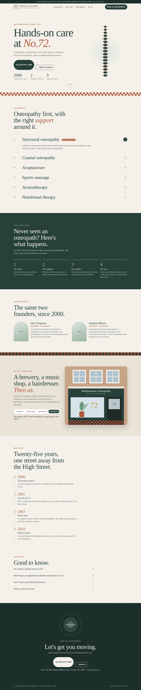
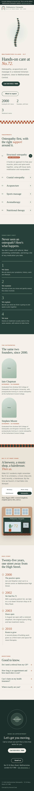

A spine that straightens as you scroll
Seventeen vertebrae start crooked and settle into line as you move down the page. It's a quiet, physical metaphor, with no claims made.
A calm, trustworthy practice, with a building that tells its story.


The problems holding the old site back.
Before screenshot to come. See the original at www.walthamstowosteopaths.co.uk/
From public search results and business listings. A full first-hand review of the live site is part of the handover.
A fast, single-file site with no framework, built for phones first, with a signature moment only this business could own.
Seventeen vertebrae start crooked and settle into line as you move down the page. It's a quiet, physical metaphor, with no claims made.
The shopfront changes from brewery to music shop to hairdresser to osteopaths, with new signage and window displays for each era.
The restored floor tiles become the site's pattern, used as bands between sections.
Listen, examine, explain, treat, with lines that draw in as you read.
The booking section ends with a slow breathing circle: breathe in, breathe out.
Hands-on care at No.72.
The building is the brand. The logo is the restored shopfront arch with four spine points inside it, drawn in moss and quarry-tile terracotta on limewash. Newsreader brings a gentle, literary warmth, and Manrope keeps the practical information clear. The whole identity is designed to lower the heart rate.
Be the obvious, trustworthy choice for Walthamstow Village. Compliant by design.
A domain email, updated years, and a Google Business Profile with each treatment and photos of the tiled entrance.
A 60-second film of the four steps, walking through the restored shopfront. It answers the question that stops new patients booking.
A short history piece with archive photos, offered to Waltham Forest Echo and village community groups. It's local heritage, not advertising.
A follow-up email after a patient's third appointment asking for a Google review, with no incentives, in line with guidance.
August 2028 marks a quarter-century in the building. An open-evening tour of the restored shop is the story.
A health practice lives on trust. A consistent identity from the sign to the appointment card, plus a proper multi-page site, is worth it.